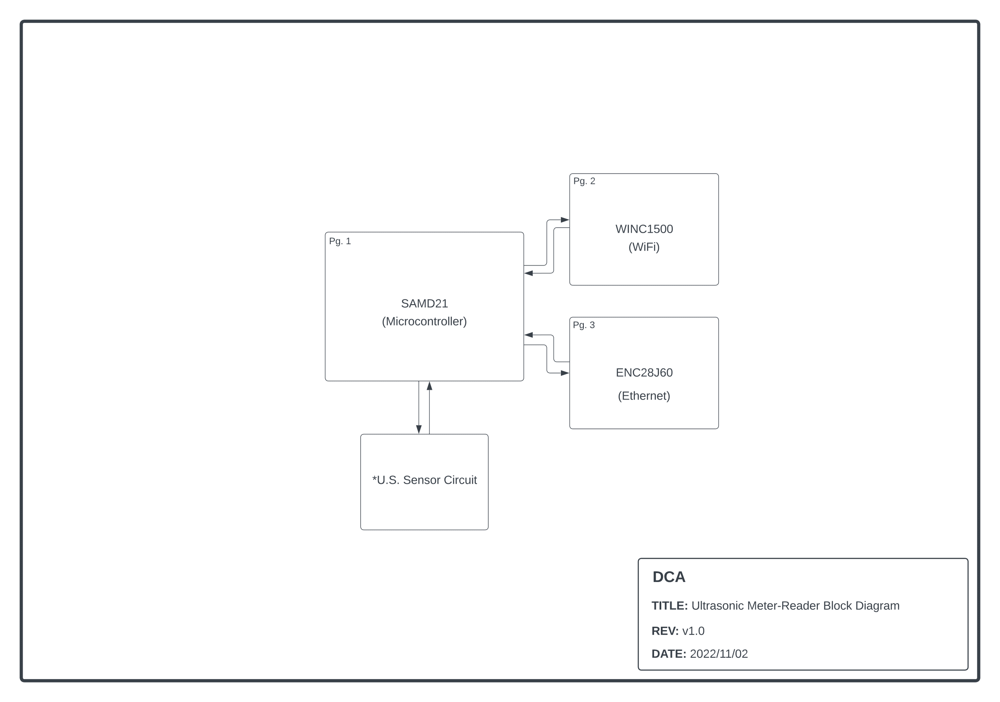
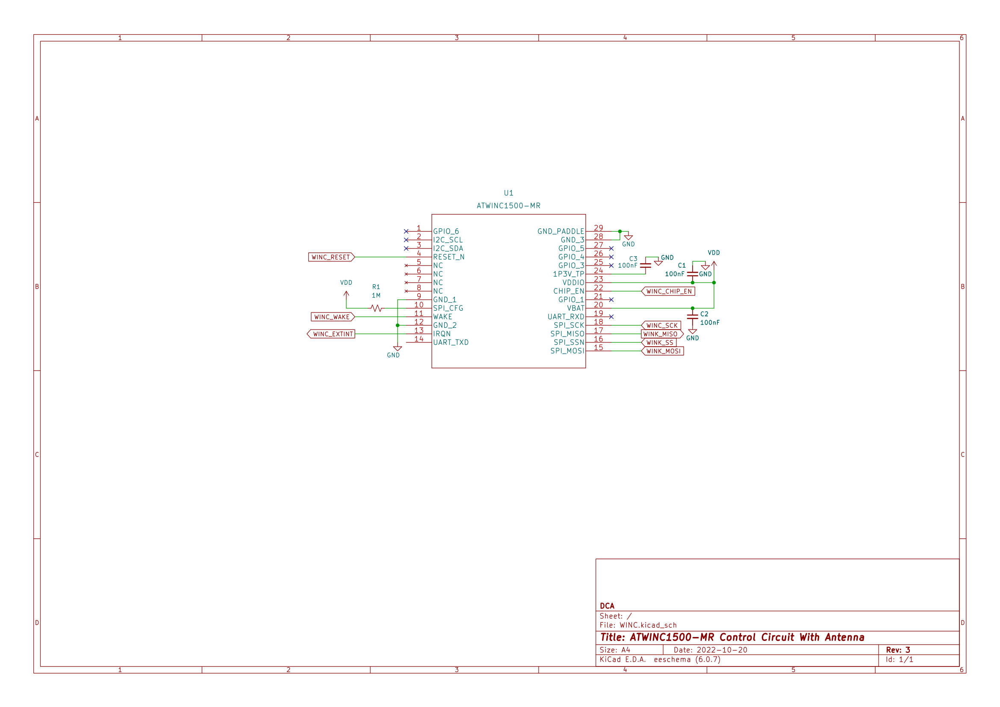
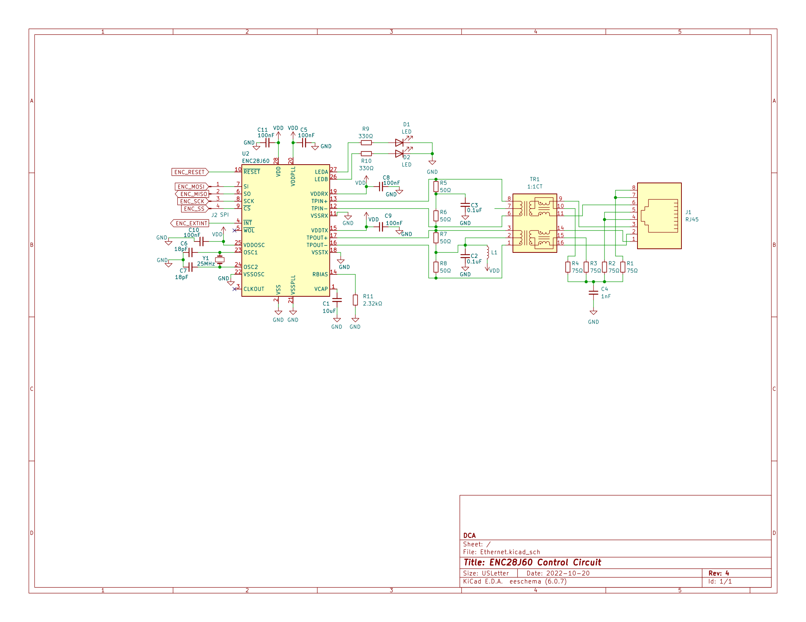
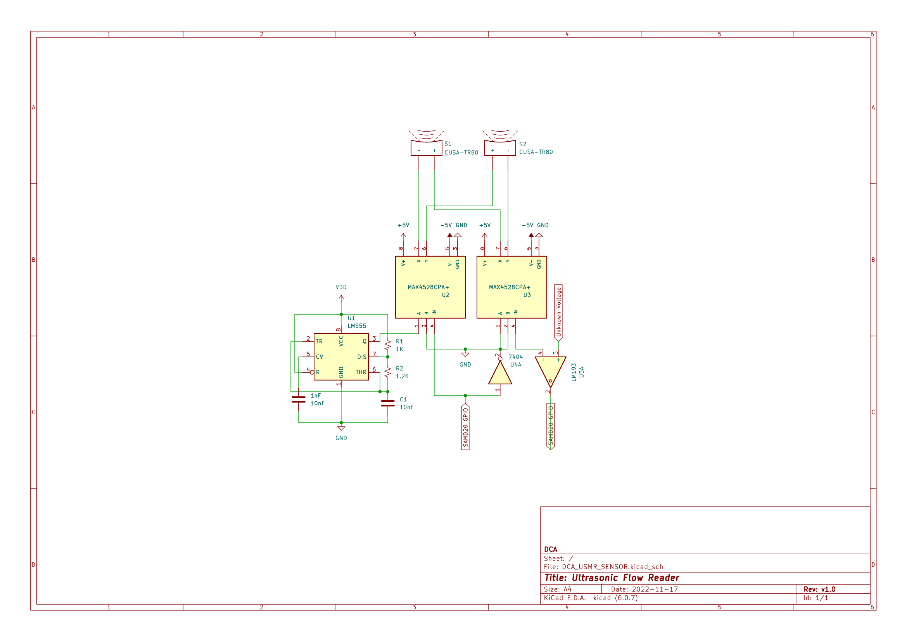
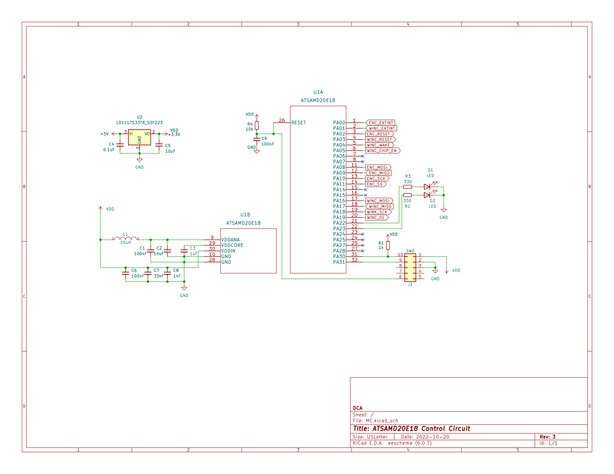

DCA is producing a flowmeter which will measure the volume and speed of water moving through a pipe

The above image displays the basic block diagram of the flowmeter components.
These components include the Wi-Fi chip, Ethernet chip (both to allow the end user to see their water usage in real time),
the microcontroller, and the ultrasonic sensors, which will non-invasively measure water volume.

The above image displays the pinout of the WINC (Wi-Fi) chip which will be interfaced with the microcontroller

The above image displays the pinout of the ENC (Ethernet) chip which will be interfaced with the microcontroller
Both the ENC and the WINC chips will allow us to use real-time updates to deliver information regarding flow rate and
water usage as fast as possible when connected to the internet

The above image displays the pinout and circuit of the sensor module. The sensor reads the movement speed of the water
based on the speed of sound travelling from one point to another. This is where the magic really happens, the information
is then sent to the micrcontroller to be compared against other points of data and flow rate is determined.

The above image displays the pinout of the SAMD microcontroller. The microcontroller is the brains of the system and is
what allows all mathematical operations to be completed. The microcontroller receives data from the sensor(s) and sends it
to the internet to update the client as soon as possible.